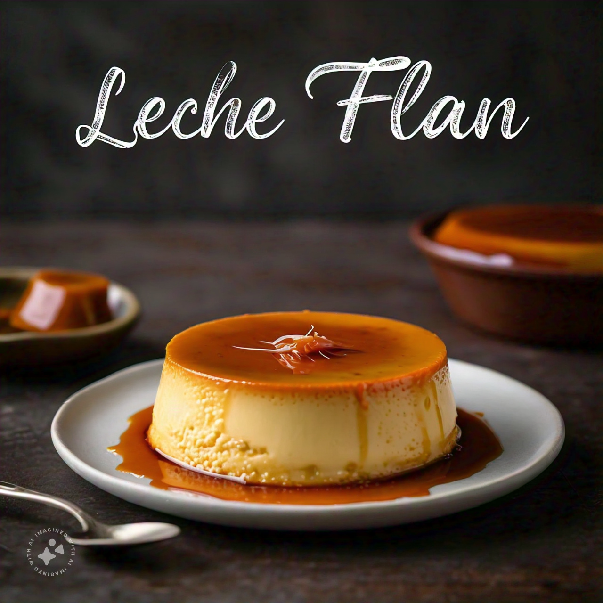

Leche Flan
Description:
Leche Flan is a popular Filipino dessert, also known as crema caramel or creme caramel. It's a rich and creamy custard pudding topped with a layer of caramel sauce, typically served chilled.
History:
Leche Flan has its roots in Spanish cuisine, brought to the Philippines during the Spanish colonial period. The name "Leche Flan" comes from the Spanish words "leche" (milk) and "flan" (custard). Over time, the dessert has evolved and become a staple in Filipino cuisine.
Ingredients:
For the Caramel Sauce:
- 1 cup granulated sugar
- 1/2 cup water
For the Custard:
- 3 large egg yolks
- 1 1/2 cups evaporated milk
- 1 1/2 cups sweetened condensed milk
- 1/2 teaspoon vanilla extract
Instructions:
Caramel Sauce:
- Combine sugar and water in a saucepan and heat over medium heat, stirring constantly.
- Bring to a boil, then reduce heat to medium-low and simmer for 5-7 minutes or until the sauce turns golden brown.
- Remove from heat and pour into a 9-inch round baking dish or 6-8 ramekins.
Custard:
- Preheat the oven to 375°F (190°C).
- In a large mixing bowl, whisk together egg yolks and vanilla extract.
- In a separate bowl, whisk together evaporated milk and sweetened condensed milk.
- Gradually pour the milk mixture into the egg yolks, whisking continuously.
- Pour the custard mixture into the prepared baking dish or ramekins.
- Bake for 45-50 minutes or until the edges are set and the center is slightly jiggly.
- Remove from the oven and let cool to room temperature.
- Refrigerate for at least 2 hours or overnight.
Assembly:
- Run a knife around the edges of the Leche Flan to release it from the mold.
- Place a plate on top of the mold and invert the Leche Flan onto the plate.
- Drizzle with caramel sauce and serve chilled.
Tips:
- Use high-quality ingredients, especially the eggs and milk, for a creamy and smooth custard.
- Don't overmix the custard mixture to prevent it from becoming too thick.
- Let the Leche Flan cool completely before refrigerating to prevent cracking.